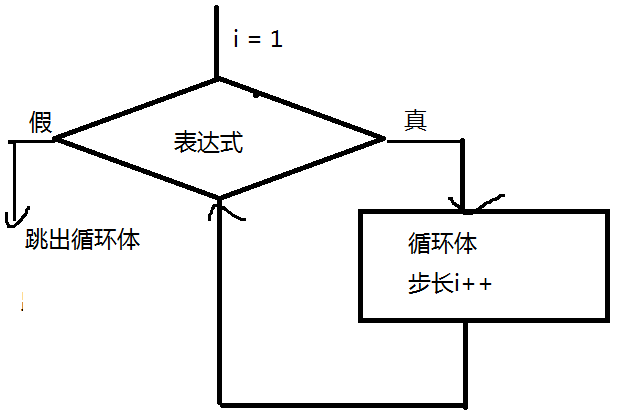

梳理知识点
1、类型转换
算术(- * / %)、关系
强制转换 ： "56jjfl34" Boolean() toString(2/8/16)
2、选择结构 控制语句有哪些 if if else if switch()
1、循环 结构
重复实现某个功能
循环控制语句 ：
while循环 ： 当型循环
while( 表达式 ){
循环体;
}
循环五要素：
1、循环变量
2、循环变量初始值
3、循环变量终值（条件）
4、循环变量的步长
5、循环体（反复执行的任务）
说明 ：
1、while后面的表达式 一般是一个条件表达式 用来控制循环结束的标志
执行逻辑：
先根据i的初始值判断表达式是否成立，如果成立就执行循环体，直到表达式为假退出循环

2、do...while 直到型循环
语法结构 ：
do{
循环体
}while(表达式)
执行逻辑：
首先执行一次循环体，再判断表达式，如果表达式成立，继续执行循环体，知道表达式不成立退出循环

3、while 和 do while的区别
while ： 先判断表达式 后执行循环体 循环体有可能一次也不执行
do while ： 先执行一次循环体 再判断表达式 循环体至少要执行一次
4、for循环
控制语句：
for(表达式1 ; 表达式2 ; 表达式3){
循环体
}
说明 ：
表达式1 ：循环变量赋初始值
表达式2 ： 循环条件（终值） 如果表达式2 被省略 就会出现死循环 --- 条件永远成立
表达式3 ： 步长 （循环变量增值）

5、break和continue
continue ： 必须用在循环语句中 继续 结束本次循环 继续执行下一次循环 （在循环体中如果遇到了continue，continue后面的代码不执行了）
break ： 用在switch语句或循环体中 结束本层循环体 （结束break所在的循环体）
6、while和for的使用场景
for： 有明确的循环次数
while ： 没有明确的循环次数